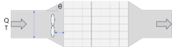

<!-- 촉매 유동 분석 모드 (flow.html) -->
<aside class="layout-col col-inputs">
    <section class="form-section">
        <h3>촉매 유동 형상</h3>
        <div class="system-diagram-container animate-fade">
            
        </div>
    </section>
    
    <form id="flow-form" class="vertical-form">
        <section class="form-section">
            <h3>입력 파라미터</h3>
            <div id="flow-params-container">
                <!-- JS에서 동적으로 생성됨 -->
            </div>
        </section>
    </form>
    
    <div class="btn-group-vertical">
        <button id="run-flow-btn" class="primary-btn">촉매 유동 분석 실행</button>
    </div>
</aside>

<div class="resizer" id="resizer-flow-1"></div>

<main class="layout-col col-results">
    <div class="results-container">
        <h3>공학 해석 리포트</h3>
        <div id="flow-results-content">
            <div class="placeholder-msg">분석 실행 버튼을 눌러주세요.</div>
        </div>
    </div>
</main>

<div class="resizer" id="resizer-flow-2"></div>

<section class="layout-col col-graph">
    <div class="graph-box">
        <h3>촉매 유동 분석 결과 그래프</h3>
        <div class="chart-wrapper">
            <canvas id="flowChartDP"></canvas>
        </div>
        <div class="chart-wrapper" style="margin-top: 10px;">
            <canvas id="flowChartGamma"></canvas>
        </div>
        <div class="chart-wrapper" style="margin-top: 10px;">
            <canvas id="flowChartOpt"></canvas>
        </div>
    </div>
</section>
